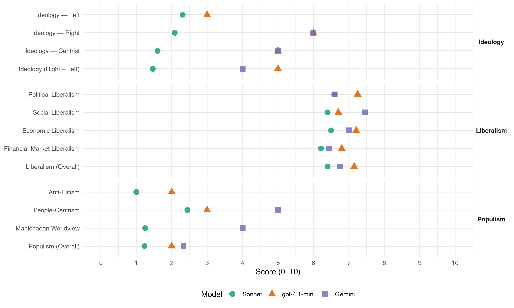

VMRO-DPMNE (North Macedonia, 2014)
manifesto_id 89710_201404
Get full text: This site shows derived annotations and short verbatim quotes only. The full manifesto text is © Manifesto Project / WZB — obtain it via manifesto-project.wzb.eu using the manifesto_id above.
Headline scores
| Dimension | Sonnet | gpt-4.1-mini | Gemini |
|---|---|---|---|
| Populism (Overall) | 1.2 | 2.0 | 2.3 |
| Anti-Elitism | 1.0 | 2.0 | – |
| People-Centrism | 2.4 | 3.0 | 5.0 |
| Manichaean Worldview | 1.2 | – | 4.0 |
| Ideology (Right − Left) | 1.5 | 5.0 | 4.0 |
| Liberalism (Overall) | 6.4 | 7.2 | 6.8 |
| Political Liberalism | 6.6 | 7.2 | 6.6 |
| Social Liberalism | 6.4 | 6.7 | 7.5 |
| Economic Liberalism | 6.5 | 7.2 | 7.0 |
| Financial-Market Liberalism | 6.2 | 6.8 | 6.4 |
Evidence per dimension
Economic Liberalism
Gemini · score 9.0 · verified · chunk 1
“безусловно почитување на економските слободи”
доследни на нашата определба за поддршка на приватната иницијатива, безусловно почитување на економските слободи и на слободата
Gemini · score 8.0 · verified · chunk 2
“либерализација на трговијата со услуги”
66. ПРОЕКТ: ЛИБЕРАЛИЗАЦИЈА НА ТРГОВИЈАТА СО УСЛУГИ СО ЗЕМЈИТЕ-ЧЛЕНКИ НА ЦЕФТА Во 2014 година ќе започнат преговори за либерализација на трговијата со услуги
Gemini · score 7.0 · verified · chunk 3
“поддршка за зголемување на конкурентноста”
индустриска политика, ќе се реализираат следниве проекти: 85. ПРОЕКТ: ПОДДРШКА ЗА ЗГОЛЕМУВАЊЕ НА КОНКУРЕНТНОСТА НА МАКЕДОНСКАТА ИНДУСТРИЈА Надоместување на дел од трошоците
Gemini · score 7.0 · verified · chunk 4
“по пат на јавно-приватно партнерство”
предвидува изградба на логистички центар, по пат на јавно-приватно партнерство, со паркинг-простор за товарни моторни возила
Gemini · score 8.0 · verified · chunk 5
“изградба на марина охрид преку јавно-приватно партнерство”
118. ПРОЕКТ: ИЗГРАДБА НА МАРИНА ОХРИД ПРЕКУ ЈАВНО-ПРИВАТНО ПАРТНЕРСТВО Проектот опфаќа доградба на пристаништето
Gemini · score 8.0 · verified · chunk 6
“ќе се намали регулаторниот товар над приватниот сектор”
оптимизира работата на инспекторатите, надзорот над компаниите и ќе се намали регулаторниот товар над приватниот сектор. За овој проект МИОА
Gemini · score 7.0 · verified · chunk 7
“либерализација на пазарот на електрична енергија”
целосно ставена во функција либерализација на пазарот на електрична енергија за средните претпријатија, а во текот
Gemini · score 8.0 · verified · chunk 8
“привлекување на странски и домашни инвестиции”
растечките економски сектори во нашата држава кој располага со големи можности за привлекување на странски и домашни инвестиции, што воедно значи и можност за нови
Gemini · score 6.0 · verified · chunk 9
“понудена на заинтересиран приватен партнер”
урбанистичка планска документација, а локацијата ќе биде понудена на заинтересиран приватен партнер кој би го изградил спортскиот аеродром.
Gemini · score 6.0 · verified · chunk 10
“работодавачите од приватниот сектор”
Работодавачите од приватниот сектор кои ќе вработат невработени лица
Gemini · score 5.0 · mixed · chunk 11
“ослободени од плаќање придонеси од задолжителното”
вработат невработени лица до 29 години… ќе биде ослободени од плаќање придонеси од задолжителното социјално осигурување
Gemini · score 7.0 · verified · chunk 12
“поттикнување на приватниот сектор за развој”
Со цел поттикнување на приватниот сектор за развој и проширување на оваа дејност разработивме
Gemini · score 8.0 · verified · chunk 14
“функционална пазарна економија”
стандарди за функционална пазарна економија
Gemini · score 6.0 · verified · chunk 15
“барањата на домашните и странски инвеститори”
стандарди, за вработените во компаниите од техничкиот сектор со понизок степен на образование (на пр. различни видови мајстори, технички работници итн). Целта е да се излезе во пресрет на барањата на домашните и странски инвеститори за ваков вид на работници, согласно нивните производствени капацитети.
Gemini · score 6.0 · verified · chunk 16
“привлекување странски инвестиции во областа”
поволни услови за привлекување странски инвестиции во областа на здравството и привлекување
Gemini · score 6.0 · verified · chunk 17
“пат на јавно-приватно партнерство”
изградба на нов театар на местото на мнт по пат на јавно-приватно партнерство - доколку се најде партнер
Gemini · score 7.0 · verified · chunk 19
“партнерства меѓу научно-истражувачкиот сектор и бизнис-секторот”
Стратегиите ќе претставуваат основа за изградба на долгорочни партнерства меѓу научно-истражувачкиот сектор и бизнис-секторот.
Gemini · score 5.0 · verified · chunk 20
“развој на цвеќарството, како една”
јавните површини. Ова ќе поттикне и развој на цвеќарството, како една современа земјоделска дејност.
gpt-4.1-mini · score 8.0 · verified · chunk 1
“политика на ниски и едноставни даноци”
ВМРО-ДПМНЕ и понатаму ќе спроведува политика на ниски и едноставни даноци за фирмите, при што реинвестираната добивка и натаму нема да се оданочува. На тој начин оној што инвестира ќе има право да одлучува како ќе располага со сопствените приходи. Повеќе средства за компаниите значи и повеќе средства за унапредување на работењето и воведувањето нови технологии и практики, нови инвестиции и работни места, а со тоа и економски раст на земјата.
gpt-4.1-mini · score 8.0 · verified · chunk 2
“политики на ниски даноци и социјални придонеси, подобрување на условите за водење бизнис”
…Малите и средните претпријатија, како носители на економскиот развој во Македонија, вработуваат над 75% од невработените лица и креираат над 60% од БДП во земјава. Во таа насока, спроведени се значителни реформи и мерки преку водењето политики на ниски даноци и социјални придонеси, подобрување на условите за водење бизнис, поедноставување на административните и регулаторните процедури и сл. Исто така, подобрени се условите за пристап до кредити и се обезбедени исклучително поволни кредитни линии од ЕИБ… Р О К : 2 0 1 4 …
gpt-4.1-mini · score 8.0 · verified · chunk 3
“поддршка на кластерите за секторска извозна промоција”
развој на иновативноста и развој на брендирани производи на кластерите; » поддршка на кластерите за секторска извозна промоција; » организирање тематски саеми; » развивање стандарди за квалитет и приспособување кон барањата на пазарите на ЕУ.
gpt-4.1-mini · score 6.0 · verified · chunk 4
“поволни услови за приватни инвеститори да почнат со изградба на катни гаражи”
…работевме на создавање поволни услови за приватни инвеститори да почнат со изградба на катни гаражи, по што се очекува изградба на катни гаражи на следниве локации…
gpt-4.1-mini · score 7.0 · verified · chunk 5
“намалување на трошоците на институциите преку методи за оптимизирање на техничките потреби”
…се предложат конкретни мерки со акционен план и ќе се пресмета колку ќе намалат трошоците на институциите преку методи за оптимизирање на техничките потреби на институциите. Сето тоа ќе придонесе до заштеда во буџетот на РМ, поефикасни институции и позадоволни граѓани.
gpt-4.1-mini · score 7.0 · verified · chunk 6
“електронски систем за запишување на факултет електронски процес на запишување”
По примерот на Естонија ќе се развие целосно електронски систем за запишување на факултет електронски процес на запишување, обработка, одлучување и известување на учениците кои сакаат да се запишат на факултет.
gpt-4.1-mini · score 8.0 · verified · chunk 7
“ќе продолжиме со следните чекори на либерализација”
…ќе продолжиме со следните чекори на либерализација. Во 2014 година ќе биде реализирана и целосно ставена во функција либерализацијата на пазарот на електрична енергија…
gpt-4.1-mini · score 8.0 · verified · chunk 8
“пазар, конкуренција, бизнис, претпријатие, данок, трговија, регулатива”
…ќе се поттикнат студентите од факултетите за туризам и угостителство да се пријават на оглас за доставување на интересни идеи и предлози со проекти за развој на туризмот во Република Македонија. На тој начин владините институции би добиле интересни проекти кои би им помогнале во развојот на туризмот…
gpt-4.1-mini · score 8.0 · verified · chunk 9
“поддршка на земјоделството и руралните средини”
ВМРО-ДПМНЕ ќе обезбеди вкупно 600 милиони евра за развој на земјоделството и руралните средини, односно по 150 милиони евра секоја година!
gpt-4.1-mini · score 7.0 · verified · chunk 10
“зголемивме најниските пензии за 76% а просечните пензии за 62%, социјалната помош за 47%”
…зголемивме најниските пензии за 76% а просечните пензии за 62%, социјалната помош за 47%, постојаната парична помош за 46%, еднократната парична помош…
gpt-4.1-mini · score 7.0 · verified · chunk 11
“отворени се и започнати со работа десет советувалишта за родители и деца”
Оваа активност продолжи во 2014 година со отворање советувалишта во Прилеп и Велес, а советувалиштето во Струмица ќе биде отворено по завршување на реконструкцијата на Центарот за социјална работа.
gpt-4.1-mini · score 7.0 · verified · chunk 12
“поволни кредитни линии со каматна стапка од 5,5% годишно”
86. ПРОЕКТ: ПРИВАТНИ УСТАНОВИ ЗА ДЕЦА – ДЕТСКИ ГРАДИНКИ И ЦЕНТРИ ЗА РАН ДЕТСКИ РАЗВОЈ … поволни кредитни линии со каматна стапка од 5,5% годишно за изградба и опремување на установи за деца - детски градинки преку кредитна линија на МБПР; …
gpt-4.1-mini · score 7.0 · verified · chunk 13
“промоција на системот на владење на правото”
Работејќи транспарентно ќе продолжиме со промоција на системот на владење на правото, што во фокусот го има почитувањето на човековите слободи и права.
gpt-4.1-mini · score 8.0 · verified · chunk 14
“Промоција на македонските стопански интереси во странство и привлекување на странски инвестиции во земјата”
…Промоција на македонските стопански интереси во странство и привлекување на странски инвестиции во земјата, како и зголемување на извозот;…
gpt-4.1-mini · score 7.0 · verified · chunk 16
“окрупнување на јавното здравство”
По примерот на Естонија каде во последните неколку години се направени огромни подобрувања во ефикасноста на јавниот здравствен сектор, ќе започнеме со окрупнување на јавното здравство. Ќе се спојат болниците, здравствените домови и центрите за јавно здравје низ градовите во државата и оние што се наоѓаат во близина. Истите ќе добијат еден одбран менаџерски тим кој ќе управува со истите. Носител: Министерство за здравство, ФЗОМ Р О К : 2 0 1 6 - 2 0 1 8 Г О Д И Н А 49. ПРОЕКТ: ВОВЕДУВАЊЕ НОВИ ПРОТОКОЛИ
gpt-4.1-mini · score 6.0 · verified · chunk 17
“поддршка на проекти од национален интерес во сите дејности од областа на културата”
Во насока на поттикнување на домашното творештво, во иднина продолжуваме со низа стимулативни мерки со кои ќе се унапреди статусот на авторот, а истовремено ќе се зголеми и продукцијата на квалитетни дела преку поддршката на проекти од национален интерес во сите дејности од областа на културата.
gpt-4.1-mini · score 7.0 · verified · chunk 18
“пазар, конкуренција, бизнис, претприемништво, данок, трговија, регулатива”
…пазар, конкуренција, бизнис, претприемништво, данок, трговија, регулатива, приватизација…
gpt-4.1-mini · score 7.0 · verified · chunk 19
“поволни заеми за општините наменети за финансирање на инфраструктурни инвестициски зафати”
Зајакнувањето на управувањето на локално ниво е поддржано преку проектот за подобрување на општинските услуги, кој се реализира во соработка со Светската банка. Со проектот се обезбедуваат поволни заеми за општините наменети за финансирање на инфраструктурни инвестициски зафати во согласност со општинските приоритети.
gpt-4.1-mini · score 6.0 · verified · chunk 20
“развој на цвеќарството, како една современа земјоделска дејност”
40. ПРОЕКТ: РОЗИТЕ - ПРЕПОЗНАТЛИВ СИМБОЛ НА МАКЕДОНИЈА Проектот има цел розите да станат препознатлив симбол на Република Македонија, преку нивно засадување покрај булеварите – кружните текови, сообраќајниците, парковите, дворовите и балконите, со што ќе се поттикне еколошката свест, континуирана заштита и прочистување на медиумите на животната средина, како и хортикултурно разубавување на јавните површини. Ова ќе поттикне и развој на цвеќарството, како една современа земјоделска дејност.
Sonnet · score 8.0 · verified · chunk 1
“почитување на економските слободи”
ќе останеме доследни на нашата определба за поддршка на приватната иницијатива, безусловно почитување на економските слободи и на слободата на поединецот
Sonnet · score 8.0 · verified · chunk 2
“либерализација на трговијата со услуги”
ПРОЕКТ: ЛИБЕРАЛИЗАЦИЈА НА ТРГОВИЈАТА СО УСЛУГИ СО ЗЕМЈИТЕ-ЧЛЕНКИ НА ЦЕФТА Во 2014 година ќе започнат преговори
Sonnet · score 7.0 · verified · chunk 3
“конкурентноста на македонската индустрија”
ПРОЕКТ: ПОДДРШКА ЗА ЗГОЛЕМУВАЊЕ НА КОНКУРЕНТНОСТА НА МАКЕДОНСКАТА ИНДУСТРИЈА Надоместување на дел од трошоците на деловните субјекти за развој на деловниот субјект
Sonnet · score 7.0 · verified · chunk 4
“јавно-приватно партнерство”
изградба на логистички центар, по пат на јавно-приватно партнерство, со паркинг-простор за товарни моторни возила и автобуси
Sonnet · score 8.0 · verified · chunk 5
“јавно-приватно партнерство”
Овој проект ќе се реализира доколку има интерес за јавно-приватно партнерство. Во случај да нема заинтересираност на приватен партнер, ќе се разгледуваат алтернативни можности за финансирање
Sonnet · score 7.0 · verified · chunk 6
“ќе се намали регулаторниот товар над приватниот сектор”
ќе оптимизира работата на инспекторатите, надзорот над компаниите и ќе се намали регулаторниот товар над приватниот сектор.
Sonnet · score 7.0 · verified · chunk 7
“либерализација на пазарот на електрична енергија”
ќе биде реализирана и целосно ставена во функција либерализацијата на пазарот на електрична енергија за средните претпријатија
Sonnet · score 7.0 · verified · chunk 8
“поголема сигурност за влез на странски инвестиции”
ќе се обезбеди поголема сигурност за влез на странски инвестиции во делот на рударството и геолошките истражувања
Sonnet · score 6.0 · verified · chunk 9
“привлекување на реномирани странски инвеститори”
активно ќе работиме на привлекување на реномирани странски инвеститори заинтересирани за изградба на поголеми откупни регионални центри
Sonnet · score 6.0 · verified · chunk 10
“конкурентноста на земјоделското производство”
ќе обезбедат зголемување на продуктивноста, а со тоа и конкурентноста на земјоделското производство во Македонија
Sonnet · score 6.0 · verified · chunk 11
“јакнење на конкурентноста на економијата”
намалување на невработеноста, зголемување на вработливоста на невработените млади лица и јакнење на конкурентноста на економијата
Sonnet · score 6.0 · verified · chunk 12
“поголема конкуренција, обезбедување на поквалитетни услуги”
се отвори можност за изградба и проширување на Приватни установи за деца… придонесува за поголема конкуренција, обезбедување на поквалитетни услуги
Sonnet · score 5.0 · verified · chunk 13
“јавно приватно партнерство”
Доколку се најде партнер за јавно приватно партнерство, ќе се изврши реконструкција и надградба на Домот на АРМ во Скопје
Sonnet · score 7.0 · verified · chunk 14
“целосно функционална пазарна економија”
постојана надградба на целосно функционална пазарна економија, како и реформите во сите други области поврзани со европската интеграција
Sonnet · score 6.0 · verified · chunk 15
“поддршка на старт-ап компании”
фондови за иновации и поддршка на старт-ап компании од областа на информатичките технологии
Sonnet · score 6.0 · verified · chunk 16
“привлекување странски инвестиции во областа на здравството”
ќе се обезбедат поволни услови за привлекување странски инвестиции во областа на здравството и привлекување најсовремена здравствена технологија
Sonnet · score 6.0 · verified · chunk 17
“јавно-приватно партнерство”
Министерството за култура започна постапка за изнаоѓање инвеститори со кои по пат на јавно-приватно партнерство треба да се изгради објект
Sonnet · score 5.0 · verified · chunk 18
“економски придобивки за Република Македонија”
Планираните активности ќе создадат услови за одржливост на локалитетот, а ќе овозможат и економски придобивки за Република Македонија.
Sonnet · score 6.0 · verified · chunk 19
“зголемување на конкурентноста на планските региони”
Зголемување на конкурентноста на планските региони преку оптимално користење на природните богатства, човечкиот и економскиот капитал
Sonnet · score 6.0 · verified · chunk 20
“поттикнување на зелени вработувања”
афирмацијата на животната средина и значењето и примената на здравата исхрана, здобивањето на нови еколошки знаења, како и поттикнување на зелени вработувања. Проектот ќе се реализира во соработка со општините
Financial-Market Liberalism
Gemini · score 8.0 · verified · chunk 1
“олеснување на пристапот до кредити”
намалување на административните процедури и олеснување на пристапот до кредити; продолжување на
Gemini · score 4.0 · verified · chunk 2
“намалат каматните стапки за субвенционираните станбени кредити”
КУПИ СТАН“ Ќе се намалат каматните стапки за субвенционираните станбени кредити преку моделот „субвенција на ратата“
Gemini · score 6.0 · verified · chunk 3
“стабилноста на овој сегмент од финансискиот пазар”
промени за кои институциите не се произнесле. За да се зајакне стабилноста на овој сегмент од финансискиот пазар, надлежниот орган ќе дава согласност и за промена
Gemini · score 7.0 · verified · chunk 4
“Средствата за овој проект се веќе обезбдени од ЕБОР.”
готовинска и безготовинска наплата на патарините. Средствата за овој проект се веќе обезбдени од ЕБОР. Буџет: проценета вредност 17 милиони евра
Gemini · score 7.0 · verified · chunk 8
“субвенционирање на кредитните линии за изградба”
поддршка и развој, ќе се продолжи со субвенционирање на кредитните линии за изградба, адаптација и уредување на мали сместувачки
Gemini · score 6.0 · verified · chunk 9
“кредити обезбедени преку Македонската банка”
преработувачките капацитети ќе бидат поддржани и со субвенционираните поволни кредити обезбедени преку Македонската банка за поддршка на развојот.
Gemini · score 6.0 · verified · chunk 10
“управување со пензиските фондови”
Го намаливме надоместокот што го наплатуваат друштвата за управување со пензиските фондови од членовите
Gemini · score 6.0 · verified · chunk 12
“поволни кредитни линии со каматна стапка”
детска градинка за 95%; поволни кредитни линии со каматна стапка од 5,5% годишно за изградба
Gemini · score 8.0 · verified · chunk 19
“првите општински обврзници како дополнителен инструмент”
Ќе им помогнеме на општините во Република Македонија да ги издадат првите општински обврзници како дополнителен инструмент за подобрување на ликвидноста
gpt-4.1-mini · score 7.0 · verified · chunk 1
“финансиски системи на ЕУ”
Ќе се пристапи кон користење на заедничката комуникациска мрежа и системски интерфејс (CCN CSI), кои се развиени од Европската комисија, за да се воспостави безбедна инфраструктура за размена на податоци меѓу ИТ-системите на DG TAXUD и соодветните системи во земјите-членки на ЕУ. Со овој проект ќе се обезбеди поврзување со царинските и на даночните системи на ЕУ.
gpt-4.1-mini · score 7.0 · verified · chunk 3
“подигнување на нивото на финансиската писменост на граѓаните”
Министерството за финансии ќе преземе повеќе активности за подигнување на нивото на финансиската писменост на граѓаните што ќе им помогне при изборот и користењето на финансиските услуги да донесуваат правилни финансиски одлуки, а со тоа да придонесат и за стабилноста на финансискиот систем.
gpt-4.1-mini · score 7.0 · verified · chunk 9
“поволни кредити со субвенционирана каматна стапка од 3 и 4%”
И натаму ќе бидат обезбедени средства за поволни кредити со субвенционирана каматна стапка од 3 и 4% на годишно ниво за примарното земјоделско производство, преработувачката индустрија и откупот на земјоделски производи.
gpt-4.1-mini · score 7.0 · verified · chunk 10
“Ја зголемивме конкуренцијата во областа на пензиските фондови со измени на законската рамка”
…Ја зголемивме конкуренцијата во областа на пензиските фондови со измени на законската рамка во насока на поттикнување на влез на странски инвеститори…
gpt-4.1-mini · score 6.0 · verified · chunk 12
“поврзување со Централниот регистар, Управата за матични книги”
2. Во насока на зголемување на ефикасноста на нотаријатот и правната сигурност на граѓаните, како и намалување на трошоците, ќе го спроведеме проектот Е-НОТАРИЈАТ … Со поврзувањето со Централниот регистар, Управата за матични книги и Министерство за внатрешни работи, податоците за ЕМБС за фирми и ЕМБГ за физички лица би биле достапни онлајн.
Sonnet · score 7.0 · verified · chunk 1
“независноста на Народната банка”
во целост ќе се почитуваат независноста на Народната банка на Република Македонија во водењето на монетарната политика и нејзиниот избор на инструменти за одржување ниска инфлација
Sonnet · score 7.0 · verified · chunk 2
“100 милиони евра поволни финансиски средства”
На домашните фирми ќе им бидат ставени на располагање новите 100 милиони евра поволни финансиски средства од ЕИБ преку МБПР и домашните банки
Sonnet · score 7.0 · verified · chunk 3
“банките да издаваат сертификати за депозити”
ќе биде изготвена законска рамка со која ќе се овозможи банките да издаваат сертификати за депозити со рок на враќање од најмалку една година
Sonnet · score 6.0 · verified · chunk 4
“докапитализација најмногу до 49%”
ќе бидат реализирани инвестиции и know-how… ќе се обезбедат стратешки партнери кои ќе го зголемат капиталот на АД Македонска пошта преку докапитализација најмногу до 49%
Sonnet · score 7.0 · verified · chunk 5
“банките, осигурителните компании, агенциите за недвижности”
бенефит ќе имаат и проценителите, банките, осигурителните компании, агенциите за недвижности и други субјекти кои ќе го користат регистарот на цени во нивната секојдневна работа
Sonnet · score 6.0 · verified · chunk 6
“Надградба на системот за е-даноци”
НАДГРАДБА НА СИСТЕМОТ ЗА Е-ДАНОЦИ Унапредување на постоечкиот систем со развој на интерфејси web сервиси за конекција кон сите заинтересирани институции
Sonnet · score 6.0 · verified · chunk 7
“докапитализација на ЕЛЕМ, најмногу до 49%”
ќе биде анализирана можноста и за докапитализација на ЕЛЕМ, најмногу до 49% од капиталот.
Sonnet · score 6.0 · verified · chunk 8
“субвенционирање на кредитните линии”
ќе се продолжи со субвенционирање на кредитните линии за изградба, адаптација и уредување на мали сместувачки капацитети
Sonnet · score 6.0 · verified · chunk 9
“поволни кредити со субвенционирана каматна стапка”
ќе бидат обезбедени средства за поволни кредити со субвенционирана каматна стапка од 3 и 4% на годишно ниво за примарното земојделско производство
Sonnet · score 6.0 · verified · chunk 10
“конкуренцијата во областа на пензиските фондови”
Ја зголемивме конкуренцијата во областа на пензиските фондови со измени на законската рамка во насока на поттикнување на влез на странски инвеститори
Sonnet · score 5.0 · verified · chunk 11
“каматна стапка од 1% на годишно ниво”
со грејс период од 18 месеци и период на враќање од 66 месеци… со каматна стапка од 1% на годишно ниво
Sonnet · score 6.0 · verified · chunk 12
“поволни кредитни линии со каматна стапка”
поволни кредитни линии со каматна стапка од 5,5% годишно за изградба и опремување на установи за деца
Sonnet · score 6.0 · verified · chunk 15
“финансиски инструменти”
Преку Фондот за иновации и технолошки развој, ќе се обезбедат средства за поттикнување на иновативноста кај компаниите преку 4 финансиски инструменти
Sonnet · score 6.0 · verified · chunk 19
“општински обврзници како дополнителен инструмент”
да ги издадат првите општински обврзници како дополнителен инструмент за подобрување на ликвидноста и обезбедување на финансиски средства
Political Liberalism
Gemini · score 8.0 · verified · chunk 1
“независно и ефикасно судство”
Висок степен на безбедност и независно и ефикасно судство преку: натамошни реформи
Gemini · score 7.0 · verified · chunk 2
“намалување на бројот и времетрањето на судските постапки”
состојбата со бројот на постапките во Македонија и ќе се предложат мерки за намалување на бројот и времетрањето на судските постапки. Целта на оваа мерка е скратување
Gemini · score 7.0 · verified · chunk 5
“темелните вредности на демократското општество”
групи во креирањето на политиките на Владата како една од темелните вредности на демократското општество. Од тие причини, во рамките на реформата
Gemini · score 7.0 · verified · chunk 6
“учеството на граѓанскиот сектор во процесот на креирање политики”
2012-2017 година, преку поттикнување на учеството на граѓанскиот сектор во процесот на креирање политики и јакнење на капацитетите за соработка
Gemini · score 6.0 · verified · chunk 7
“видео средби со македонските граѓани”
определен термин во месецот, ќе реализираат on-line видео средби со македонските граѓани и стопанственици. Така ќе им се овозможи
Gemini · score 7.0 · verified · chunk 8
“Имплементација на европските директиви во националните прописи”
законската регулатива во секторот рударство. » Имплементација на европските директиви во националните прописи од областа на рударството. » Јасно дефинирање
Gemini · score 6.0 · verified · chunk 11
“законски измени со кои овие семејства”
ослободување од плаќање на радиодифузна такса… Ќе направиме законски измени со кои овие семејства во социјален ризик ќе бидат ослободени
Gemini · score 8.0 · verified · chunk 12
“зајакнување на независноста на судството”
Ги постигнавме зацртаните цели за зајакнување на независноста на судството и тоа во сите нејзини аспекти
Gemini · score 8.0 · verified · chunk 13
“развојот на демократското општество”
претставува основен предуслов за развојот на демократското општество. Во таа насока
Gemini · score 8.0 · verified · chunk 14
“стабилна демократска земја”
Република Македонија како современа и стабилна демократска земја, како и заштита
Gemini · score 5.0 · verified · chunk 15
“Владата на Република Македонија”
во минатото не го завршиле своето високо образование. Во интерес на граѓаните, од академска 2014/2015 година проектот 35/45 се менува и ќе гласи проект 30/35 (односно старосната граница ќе се намали над 30 години за жени, односно над 35 години за мажи), кои ќе имаат можност под одредени финансиски и други поволности да се запишат на студиски програми од прв циклус на студии, односно да се стекнат со диплома за завршено високо образование на некој од државните универзитети во Република Македонија. Р О К Н А Р Е А Л И З А Ц И Ј А : О К Т О М В Р И 2 0 1 4 – К О Н Т И Н У И Р АН О 38. ВОВЕДУВАЊЕТО НА ДРЖАВНА КВОТА ВО ВТОР И ТРЕТ ЦИКЛУС НА СТУДИИ НА УНИВЕРЗИТЕТИТЕ ВО РЕПУБЛИКА МАКЕДОНИЈА Со оваа мерка ќе се стремиме да ги задржиме најквалитетните студенти од секоја генерација. Имено, Владата на Република Македонија ќе го утврдува бројот на квоти
Gemini · score 5.0 · verified · chunk 16
“измени законската регулатива во делот”
Со овој проект ќе се измени законската регулатива во делот на зголемување на правата
Gemini · score 5.0 · verified · chunk 18
“учество во креирањето на политики”
Ќе се стремиме младите да имаат поголемо учество во креирањето на политики и донесување одлуки
Gemini · score 7.0 · verified · chunk 19
“учеството на младите во процесите на донесување на одлуки”
значеен чекор за зголемување на улогата и учеството на младите во процесите на донесување на одлуки на локално ниво.
Gemini · score 5.0 · verified · chunk 20
“процедура на разгледување од Владата”
експертска група и истиот е во процедура на разгледување од Владата на Република Македонија.
gpt-4.1-mini · score 8.0 · verified · chunk 1
“независноста на Народната банка на Република Македонија”
Исто така, ќе бидат намалени и трошоците за подготовка на документи бидејќи нема да треба да се подготвуваат хартиени транзитни документи, што ќе придонесе за намалување на времетраењето на извозните и на увозните постапки. Р О К : 2 0 1 4 – 2 0 1 5 Г О Д И Н А ќ Е С Е Д О Н Е С А Т И З М Е Н И Т Е , А Ќ Е С Е П Р И М Е Н У В А А Т О Д 2 0 1 6 Г О Д И Н А 10. ПРОЕКТ: ПОРТАЛ-ПРЕСУДИ ЗА ДАНОЧНИ И ЗА ЦАРИНСКИ СПОРОВИ Со проектот се предвидува креирање на портал за преглед на конечни и правосилни судски одлуки донесени од Управниот суд кои се однесуваат на предмети од даночната и од царинската област. Прегледот на пресудите има цел да овозможи следење и согледување на постапувањето и примената во практика на прописите од даночната и од царинската област, сортирани за видот на данокот и прекршокот (од страна на даночните обврзници и првостепените органи).
gpt-4.1-mini · score 7.0 · verified · chunk 2
“Јакнењето на правната сигурност ќе овозможи зголемување на економскиот потенцијал на приватниот сектор”
…со што бизнисмените ќе можат побрзо да ги наплаќаат долговите. Јакнењето на правната сигурност ќе овозможи зголемување на економскиот потенцијал на приватниот сектор, давајќи им сигурност на економските оператори да инвестираат, тргуваат и да отвораат нови работни места. Р О К : 2 0 1 4 Г О Д И Н А …
gpt-4.1-mini · score 6.0 · verified · chunk 3
“закон за фискални правила со кој ќе се утврдат правилата за ограничување на јавната потрошувачка”
ќе воведеме „фискални правила“. Во таа насока, ќе донесеме закон за фискални правила со кој ќе се утврдат правилата за ограничување на јавната потрошувачка и ќе се зајакне одговорноста за користењето на буџетските средства. Со фискалните правила ќе се обезбеди: зајакната буџетска дисциплина, подобра координација меѓу различните нивоа на власт и намалување на несигурноста на идната фискална политика.
gpt-4.1-mini · score 6.0 · verified · chunk 4
“зголемување на безбедноста на учесниците во сообраќајот преку анализирање и одбележување на црните точки”
…поврзување меѓу Министерството за транспорт и врски, Јавното претпријатие за државни патишта и Министерството за внатрешни работи, на едно место ќе се вршат сите работи во областа на давање одобренија… зголемување на безбедноста на учесниците во сообраќајот преку анализирање и одбележување на црните точки, водење кампањи за побезбеден сообраќај и укажување на возачите за опасностите од несовесно возење.
gpt-4.1-mini · score 7.0 · verified · chunk 5
“еднаквост на граѓаните, предвидливост на работењето на администрацијата, учеството на граѓаните”
Основните начела за дејствување на администрацијата се: еднаквост на граѓаните, предвидливост на работењето на администрацијата, учеството на граѓаните, стопанските субјекти и сите заинтересирани групи во креирањето на политиките на Владата како една од темелните вредности на демократското општество.
gpt-4.1-mini · score 7.0 · verified · chunk 6
“систем за дистрибуција на електронска пошта до секој заинтересирано физичко или правно лице”
Ќе се изработи систем за дистрибуција на електронска пошта до секој заинтересирано физичко или правно лице кое сака да добие информации и пристап до податоците на Собранието на РМ, како и пристап до граѓанските иницијативи и дебати кои се реализираат преку Парламентот.
gpt-4.1-mini · score 7.0 · verified · chunk 7
“Владата на ВМРО-ДПМНЕ активно ќе работи на финансиско зајакнување”
…Владата на ВМРО-ДПМНЕ активно ќе работи на финансиско зајакнување на ЕЛЕМ, со крајна цел обезбедување на долгорочни средства за инвестиции и зголемување на домашното производство на електрична енергија…
gpt-4.1-mini · score 7.0 · verified · chunk 8
“демократија, права, избори, судови, медиуми”
…медиуми, со цел зголемување на бројот на странски и домашни туристи и севкупното промовирање на Македонија. Во наредниот период Владата на ВМРО ДПМНЕ ќе работи на надминување на неколку предизвици во оваа област, како што се пристап до квалификувана работна сила, подобрување на квалитетот на услугите и подобрување на локалната туристичка инфраструктура…
gpt-4.1-mini · score 7.0 · verified · chunk 9
“редовен дијалог со земјоделците и останатите учесници во секторот”
Заедно така и ќе продолжиме. Развојот на земјоделството и во идниот период ќе го градиме преку редовен дијалог со земјоделците и останатите учесници во секторот.
gpt-4.1-mini · score 7.0 · verified · chunk 10
“обезбедивме бесплатно здравствено осигурување за граѓани кои немаат никаков приход”
…обезбедивме бесплатно здравствено осигурување за граѓани кои немаат никаков приход, обезбедивме за пензионерите бесплатни здравствени прегледи…
gpt-4.1-mini · score 7.0 · verified · chunk 11
“Продолжуваме со хармонизација на легислативата со Европското законодавство”
Продолжуваме со хармонизација на легислативата со Европското законодавство, со цел унапредување на правата и обврските на работодавачите и работниците, » Ќе настојуваме преку стриктна примена и почитување на мерките за безбедност при работа, да се намали бројот на трудовите инвалиди
gpt-4.1-mini · score 9.0 · verified · chunk 12
“заштитата на човековите права и слободи се врвен приоритет”
12. ЧОВЕКОВИ ПРАВА Заштитата на човековите права и слободи се врвен приоритет на Владата на ВМРО-ДПМНЕ. Нивното целосно почитување согласно меѓународните конвенции, а особено Конвенцијата за заштитата на основните човекови права и слободи, претставува основен предуслов за развојот на демократското општество.
gpt-4.1-mini · score 9.0 · verified · chunk 13
“Заштитата на човековите права и слободи се врвен приоритет”
12. ЧОВЕКОВИ ПРАВА Заштитата на човековите права и слободи се врвен приоритет на Владата на ВМРО-ДПМНЕ. Нивното целосно почитување согласно меѓународните конвенции, а особено Конвенцијата за заштитата на основните човекови права и слободи, претставува основен предуслов за развојот на демократското општество.
gpt-4.1-mini · score 9.0 · verified · chunk 14
“ВМРО-ДПМНЕ останува силно посветена на процесот на интеграција во семејството во кое припаѓа политички, културно и економски”
…ВМРО-ДПМНЕ останува силно посветена на процесот на интеграција во семејството во кое припаѓа политички, културно и економски. Членството во ЕУ и НАТО ќе значи додадена вредност како за нашата, така и за регионалната стабилност…
gpt-4.1-mini · score 7.0 · verified · chunk 15
“секој граѓанин на Република Македонија има право на здравствена услуга по највисоки стандарди”
…Секој граѓанин на Република Македонија има право на здравствена услуга по највисоки стандарди, што е неопходно за здрав и квалитетен живот. Здравствениот систем континуирано се реформира во насока на подобрување…
gpt-4.1-mini · score 7.0 · verified · chunk 16
“воведување индикатори за квалитет”
предвидена е имплементација на концептот пациент-центрична здравствена установа, најпрво во неколку пилот-институции. Концептот пациент-центрична здравствена установа, меѓу другото, опфаќа редовни средби на менаџментот на установите со претставници на пациентите и нивните семејства, како и поставување на пациентот во центарот на сите процеси во здравствените установи. Носител: Министерство за здравство Буџет: 5.000.000 денари Р О К : 2 0 1 4 - 2 0 1 8 Г О Д И Н А 31. ПРОЕКТ: ЕДУКАЦИИ - ОБУКИ НА ДОКТОРИ И ДРУГ ЗДРАВСТВЕН ПЕРСОНАЛ Проектот опфаќа едукација на 500 доктори и друг здравствен персонал. Секој доктор по завршената едукација ќе мора да се врати со нов метод, интервенција, вештина. Целта е стекнување на најнови знаења и стручно оспособување и усовршување на медицинскиот кадар од јавните здравствени установи на терциерно ниво, а потоа и на секундарно ниво на здравствена заштита, за примената на посложени интервенции. Сево ова ќе придонесе за подобрување на општата здравствена состојба на населението преку навремена дијагностика, намалување на просечното време на лекување, давање услуги по највисоки стандарди, намалување на просечното време на чекање, намалување на трошоците за лекување по пациент, намалување на постоперативните компликации, како и намалување на боледувањата. Министерството за здравство ќе изготви План за дисеминација на стекнатите знаења преку екстерен облик на усовршување и подигнување на нивото на стручно знаење и унапредување на квалитетот на здравствените услуги во сите облици на здравствена заштита во секојдневната практика, како и одржување на стручни предавања и практична примена на новите методи од страна на лицата кои ја извеле едукацијата на своите колеги во своите и во други установи.
gpt-4.1-mini · score 7.0 · verified · chunk 17
“редовно годишно мерење на задоволството на пациентите од здравствените услуги”
Со овој проект предвидуваме редовно годишно мерење на задоволството на пациентите од здравствените услуги и објавување на резултатите по болници. Исто така, предвидено е креирање на национална ранг-листа на болниците според задоволството на пациентите, како и создавање на платформа за споделување на искуствата на пациентите во здравствениот систем и со конкретни лекари.
gpt-4.1-mini · score 7.0 · verified · chunk 18
“демократија, права, избори, судови, медиуми”
…медиуми, права, избори, судови, медиуми, влада, парламент… демократски институции…
gpt-4.1-mini · score 7.0 · verified · chunk 19
“поддршка на младите во процесите на донесување на одлуки”
Со проектот Совети на младите во општините се прави значаен чекор за зголемување на улогата и учеството на младите во процесите на донесување на одлуки на локално ниво. Преку локалните младински совети, младите ќе можат директно и непосредно да предлагаат проекти и мерки за подобрување на нивната положба во своето место на живеење, а со тоа и да го унапредуваат развојот на општината.
gpt-4.1-mini · score 7.0 · verified · chunk 20
“Донесувањето на Стратегијата за заштита на природата”
29. ПРОЕКТ: НАЦИОНАЛНА СТРАТЕГИЈА ЗА ЗАШТИТА НА ПРИРОДАТА Донесувањето на Стратегијата за заштита на природата ќе ги даде визијата, основните цели и стратешките определби за заштита на природата и ќе претставува една интегрирана рамка, заснована на серија стратешки компоненти и пристапи.
Sonnet · score 7.0 · verified · chunk 1
“независно и ефикасно судство”
Висок степен на безбедност и независно и ефикасно судство преку: натамошни реформи во полицијата и во судството; засилување на одбраната и неселективно спроведување на правото.
Sonnet · score 7.0 · verified · chunk 2
“2/3 мнозинство во Собранието”
Доколку се обезбеди 2/3 мнозинство во Собранието на Република Македонија, ќе се изврши изменување на Законот за парнична постапка
Sonnet · score 6.0 · verified · chunk 3
“транспарентност и одржливост на јавните финансии”
За обезбедување долгорочна стабилност, транспарентност и одржливост на јавните финансии по примерот на земјите од Европа, ќе воведеме „фискални правила”
Sonnet · score 6.0 · verified · chunk 4
“електронско поврзување меѓу Министерството за транспорт”
Со електронското поврзување меѓу Министерството за транспорт и врски, Јавното претпријатие за државни патишта и Министерството за внатрешни работи, на едно место ќе се вршат сите работи
Sonnet · score 7.0 · verified · chunk 5
“еднаквост на граѓаните, предвидливост на работењето”
Основните начела за дејствување на администрацијата се: еднаквост на граѓаните, предвидливост на работењето на администрацијата, учеството на граѓаните, стопанските субјекти и сите заинтересирани групи во креирањето на политиките на Владата како една од темелните вредности на демократското општество
Sonnet · score 7.0 · verified · chunk 6
“јавноста ги коментира и дава предлози”
преку кој јавноста ги коментира и дава предлози и забелешки на предложените законски решенија пред нивно усвојување од страна на Владата
Sonnet · score 6.0 · verified · chunk 7
“имплементација на европските директиви во националните прописи”
Имплементација на европските директиви во националните прописи од областа на рударството.
Sonnet · score 6.0 · verified · chunk 9
“јавна набавка за давање услуги”
Изработката на стратегиите ќе се реализира преку јавна набавка за давање услуги од консултантски куќи, правни субјекти или образовни институции
Sonnet · score 6.0 · verified · chunk 10
“максимално транспарентен и без учество”
целиот процес ќе биде максимално транспарентен и без учество на човечки фактор. Со овој проект ќе се овозможи
Sonnet · score 6.0 · verified · chunk 11
“хармонизација на легислативата со Европското законодавство”
Продолжуваме со хармонизација на легислативата со Европското законодавство, со цел унапредување на правата и обврските на работодавачите и работниците
Sonnet · score 8.0 · verified · chunk 12
“независноста на судството”
Ги постигнавме зацртаните цели за зајакнување на независноста на судството и тоа во сите нејзини аспекти
Sonnet · score 8.0 · verified · chunk 13
“заштита на човековите права и слободи”
Заштитата на човековите права и слободи се врвен приоритет на Владата на ВМРО-ДПМНЕ. Нивното целосно почитување согласно меѓународните конвенции
Sonnet · score 8.0 · verified · chunk 14
“владеење на правото, независноста на судството”
Цврсто стоиме на заложбите за владеење на правото, независноста на судството и пазарната економија, кои се заеднички македонски и европски вредности
Sonnet · score 6.0 · verified · chunk 16
“измена на Законот за опијатни аналгетици”
Неопходна е измена на Законот за опијатни аналгетици - систем на контрола на препишување, кој ќе оневозможи злоупотреба
Sonnet · score 6.0 · verified · chunk 17
“по пат на јавно-приватно партнерство”
да се изгради објект во кој покрај другите содржини, ќе биде сместен и театарот. Доколку не се најде партнер за реализација на проектот по пат на јавно-приватно партнерство
Sonnet · score 6.0 · verified · chunk 18
“учеството на младите во процесите на донесување на одлуки”
Совети на младите во општините се прави значаен чекор за зголемување на улогата и учеството на младите во процесите на донесување на одлуки на локално ниво.
Sonnet · score 6.0 · verified · chunk 19
“учеството на младите во процесите на донесување на одлуки”
зголемување на улогата и учеството на младите во процесите на донесување на одлуки на локално ниво
Liberalism (Overall)
Gemini · score 8.0 · verified · chunk 1
“безусловно почитување на економските слободи”
доследни на нашата определба за поддршка на приватната иницијатива, безусловно почитување на економските слободи и на слободата
Gemini · score 6.0 · verified · chunk 2
“либерализација на трговијата со услуги”
66. ПРОЕКТ: ЛИБЕРАЛИЗАЦИЈА НА ТРГОВИЈАТА СО УСЛУГИ СО ЗЕМЈИТЕ-ЧЛЕНКИ НА ЦЕФТА Во 2014 година ќе започнат преговори за либерализација на трговијата со услуги
Gemini · score 7.0 · verified · chunk 3
“поддршка за зголемување на конкурентноста”
индустриска политика, ќе се реализираат следниве проекти: 85. ПРОЕКТ: ПОДДРШКА ЗА ЗГОЛЕМУВАЊЕ НА КОНКУРЕНТНОСТА НА МАКЕДОНСКАТА ИНДУСТРИЈА Надоместување на дел од трошоците
Gemini · score 7.0 · verified · chunk 4
“по пат на јавно-приватно партнерство”
предвидува изградба на логистички центар, по пат на јавно-приватно партнерство, со паркинг-простор за товарни моторни возила
Gemini · score 8.0 · verified · chunk 5
“изградба на марина охрид преку јавно-приватно партнерство”
118. ПРОЕКТ: ИЗГРАДБА НА МАРИНА ОХРИД ПРЕКУ ЈАВНО-ПРИВАТНО ПАРТНЕРСТВО Проектот опфаќа доградба на пристаништето
Gemini · score 7.0 · verified · chunk 6
“ќе се намали регулаторниот товар над приватниот сектор”
оптимизира работата на инспекторатите, надзорот над компаниите и ќе се намали регулаторниот товар над приватниот сектор. За овој проект МИОА
Gemini · score 7.0 · verified · chunk 7
“либерализација на пазарот на електрична енергија”
целосно ставена во функција либерализација на пазарот на електрична енергија за средните претпријатија, а во текот
Gemini · score 7.0 · verified · chunk 8
“привлекување на странски и домашни инвестиции”
растечките економски сектори во нашата држава кој располага со големи можности за привлекување на странски и домашни инвестиции, што воедно значи и можност за нови
Gemini · score 6.0 · verified · chunk 9
“понудена на заинтересиран приватен партнер”
урбанистичка планска документација, а локацијата ќе биде понудена на заинтересиран приватен партнер кој би го изградил спортскиот аеродром.
Gemini · score 6.0 · verified · chunk 10
“управување со пензиските фондови”
Го намаливме надоместокот што го наплатуваат друштвата за управување со пензиските фондови од членовите
Gemini · score 6.0 · verified · chunk 11
“еднакви шанси и можности за сите”
изградба на кохезивно општество со ,,еднакви шанси и можности за сите“. ВМРО-ДПМНЕ целосно се посвети
Gemini · score 7.0 · verified · chunk 12
“зајакнување на независноста на судството”
Ги постигнавме зацртаните цели за зајакнување на независноста на судството и тоа во сите нејзини аспекти
Gemini · score 8.0 · verified · chunk 13
“Заштитата на човековите права”
12. ЧОВЕКОВИ ПРАВА Заштитата на човековите права и слободи се врвен приоритет
Gemini · score 8.0 · verified · chunk 14
“функционална пазарна економија”
стандарди за функционална пазарна економија
Gemini · score 6.0 · verified · chunk 15
“барањата на домашните и странски инвеститори”
стандарди, за вработените во компаниите од техничкиот сектор со понизок степен на образование (на пр. различни видови мајстори, technical работници итн). Целта е да се излезе во пресрет на барањата на домашните и странски инвеститори за ваков вид на работници, согласно нивните производствени капацитети.
Gemini · score 6.0 · verified · chunk 16
“намалување на дискриминацијата на овие”
маргинализирана група на граѓани, намалување на дискриминацијата на овие лица, давање на можност
Gemini · score 7.0 · verified · chunk 17
“елиминирање на дискриминацијата во системот”
намалена администрација, навремена исплата на надоместоците, елиминирање на дискриминацијата во системот за различен период од исплата на платите
Gemini · score 5.0 · verified · chunk 18
“учество во креирањето на политики”
Ќе се стремиме младите да имаат поголемо учество во креирањето на политики и донесување одлуки
Gemini · score 8.0 · verified · chunk 19
“првите општински обврзници како дополнителен инструмент”
Ќе им помогнеме на општините во Република Македонија да ги издадат првите општински обврзници како дополнителен инструмент за подобрување на ликвидноста
Gemini · score 5.0 · verified · chunk 20
“процедура на разгледување од Владата”
експертска група и истиот е во процедура на разгледување од Владата на Република Македонија.
gpt-4.1-mini · score 7.0 · verified · chunk 1
“политика на ниски и едноставни даноци”
ВМРО-ДПМНЕ и понатаму ќе спроведува политика на ниски и едноставни даноци за фирмите, при што реинвестираната добивка и натаму нема да се оданочува. На тој начин оној што инвестира ќе има право да одлучува како ќе располага со сопствените приходи. Повеќе средства за компаниите значи и повеќе средства за унапредување на работењето и воведувањето нови технологии и практики, нови инвестиции и работни места, а со тоа и економски раст на земјата.
gpt-4.1-mini · score 8.0 · verified · chunk 2
“политики на ниски даноци и социјални придонеси, подобрување на условите за водење бизнис”
…Малите и средните претпријатија, како носители на економскиот развој во Македонија, вработуваат над 75% од невработените лица и креираат над 60% од БДП во земјава. Во таа насока, спроведени се значителни реформи и мерки преку водењето политики на ниски даноци и социјални придонеси, подобрување на условите за водење бизнис, поедноставување на административните и регулаторните процедури и сл. Исто така, подобрени се условите за пристап до кредити и се обезбедени исклучително поволни кредитни линии од ЕИБ… Р О К : 2 0 1 4 …
gpt-4.1-mini · score 7.0 · verified · chunk 3
“закон за фискални правила со кој ќе се утврдат правилата за ограничување на јавната потрошувачка”
ќе воведеме „фискални правила“. Во таа насока, ќе донесеме закон за фискални правила со кој ќе се утврдат правилата за ограничување на јавната потрошувачка и ќе се зајакне одговорноста за користењето на буџетските средства. Со фискалните правила ќе се обезбеди: зајакната буџетска дисциплина, подобра координација меѓу различните нивоа на власт и намалување на несигурноста на идната фискална политика.
gpt-4.1-mini · score 6.0 · verified · chunk 4
“зголемување на безбедноста на учесниците во сообраќајот преку анализирање и одбележување на црните точки”
…поврзување меѓу Министерството за транспорт и врски, Јавното претпријатие за државни патишта и Министерството за внатрешни работи, на едно место ќе се вршат сите работи во областа на давање одобренија… зголемување на безбедноста на учесниците во сообраќајот преку анализирање и одбележување на црните точки, водење кампањи за побезбеден сообраќај и укажување на возачите за опасностите од несовесно возење.
gpt-4.1-mini · score 7.0 · verified · chunk 5
“еднаквост на граѓаните, предвидливост на работењето на администрацијата, учеството на граѓаните”
Основните начела за дејствување на администрацијата се: еднаквост на граѓаните, предвидливост на работењето на администрацијата, учеството на граѓаните, стопанските субјекти и сите заинтересирани групи во креирањето на политиките на Владата како една од темелните вредности на демократското општество.
gpt-4.1-mini · score 7.0 · verified · chunk 6
“систем за дистрибуција на електронска пошта до секој заинтересирано физичко или правно лице”
Ќе се изработи систем за дистрибуција на електронска пошта до секој заинтересирано физичко или правно лице кое сака да добие информации и пристап до податоците на Собранието на РМ, како и пристап до граѓанските иницијативи и дебати кои се реализираат преку Парламентот.
gpt-4.1-mini · score 8.0 · verified · chunk 7
“ќе продолжиме со следните чекори на либерализација”
…ќе продолжиме со следните чекори на либерализација. Во 2014 година ќе биде реализирана и целосно ставена во функција либерализацијата на пазарот на електрична енергија…
gpt-4.1-mini · score 7.0 · verified · chunk 8
“демократија, права, избори, судови, медиуми”
…медиуми, со цел зголемување на бројот на странски и домашни туристи и севкупното промовирање на Македонија. Во наредниот период Владата на ВМРО ДПМНЕ ќе работи на надминување на неколку предизвици во оваа област, како што се пристап до квалификувана работна сила, подобрување на квалитетот на услугите и подобрување на локалната туристичка инфраструктура…
gpt-4.1-mini · score 7.0 · verified · chunk 9
“поддршка на земјоделството и руралните средини”
ВМРО-ДПМНЕ ќе обезбеди вкупно 600 милиони евра за развој на земјоделството и руралните средини, односно по 150 милиони евра секоја година!
gpt-4.1-mini · score 7.0 · verified · chunk 10
“зголемивме најниските пензии за 76% а просечните пензии за 62%, социјалната помош за 47%”
…зголемивме најниските пензии за 76% а просечните пензии за 62%, социјалната помош за 47%, постојаната парична помош за 46%, еднократната парична помош…
gpt-4.1-mini · score 7.0 · verified · chunk 11
“Продолжуваме со хармонизација на легислативата со Европското законодавство”
Продолжуваме со хармонизација на легислативата со Европското законодавство, со цел унапредување на правата и обврските на работодавачите и работниците, » Ќе настојуваме преку стриктна примена и почитување на мерките за безбедност при работа, да се намали бројот на трудовите инвалиди
gpt-4.1-mini · score 8.0 · verified · chunk 12
“заштитата на човековите права и слободи се врвен приоритет”
12. ЧОВЕКОВИ ПРАВА Заштитата на човековите права и слободи се врвен приоритет на Владата на ВМРО-ДПМНЕ. Нивното целосно почитување согласно меѓународните конвенции, а особено Конвенцијата за заштитата на основните човекови права и слободи, претставува основен предуслов за развојот на демократското општество.
gpt-4.1-mini · score 8.0 · verified · chunk 13
“Заштитата на човековите права и слободи се врвен приоритет”
12. ЧОВЕКОВИ ПРАВА Заштитата на човековите права и слободи се врвен приоритет на Владата на ВМРО-ДПМНЕ. Нивното целосно почитување согласно меѓународните конвенции, а особено Конвенцијата за заштитата на основните човекови права и слободи, претставува основен предуслов за развојот на демократското општество.
gpt-4.1-mini · score 8.0 · verified · chunk 14
“ВМРО-ДПМНЕ останува силно посветена на процесот на интеграција во семејството во кое припаѓа политички, културно и економски”
…ВМРО-ДПМНЕ останува силно посветена на процесот на интеграција во семејството во кое припаѓа политички, културно и економски. Членството во ЕУ и НАТО ќе значи додадена вредност како за нашата, така и за регионалната стабилност…
gpt-4.1-mini · score 7.0 · verified · chunk 15
“секој граѓанин на Република Македонија има право на здравствена услуга по највисоки стандарди”
…Секој граѓанин на Република Македонија има право на здравствена услуга по највисоки стандарди, што е неопходно за здрав и квалитетен живот. Здравствениот систем континуирано се реформира во насока на подобрување…
gpt-4.1-mini · score 7.0 · verified · chunk 16
“окрупнување на јавното здравство”
По примерот на Естонија каде во последните неколку години се направени огромни подобрувања во ефикасноста на јавниот здравствен сектор, ќе започнеме со окрупнување на јавното здравство. Ќе се спојат болниците, здравствените домови и центрите за јавно здравје низ градовите во државата и оние што се наоѓаат во близина. Истите ќе добијат еден одбран менаџерски тим кој ќе управува со истите. Носител: Министерство за здравство, ФЗОМ Р О К : 2 0 1 6 - 2 0 1 8 Г О Д И Н А 49. ПРОЕКТ: ВОВЕДУВАЊЕ НОВИ ПРОТОКОЛИ
gpt-4.1-mini · score 7.0 · verified · chunk 17
“редовно годишно мерење на задоволството на пациентите од здравствените услуги”
Со овој проект предвидуваме редовно годишно мерење на задоволството на пациентите од здравствените услуги и објавување на резултатите по болници. Исто така, предвидено е креирање на национална ранг-листа на болниците според задоволството на пациентите, како и создавање на платформа за споделување на искуствата на пациентите во здравствениот систем и со конкретни лекари.
gpt-4.1-mini · score 7.0 · verified · chunk 18
“демократија, права, избори, судови, медиуми”
…медиуми, права, избори, судови, медиуми, влада, парламент… демократски институции…
gpt-4.1-mini · score 7.0 · verified · chunk 19
“поволни заеми за општините наменети за финансирање на инфраструктурни инвестициски зафати”
Зајакнувањето на управувањето на локално ниво е поддржано преку проектот за подобрување на општинските услуги, кој се реализира во соработка со Светската банка. Со проектот се обезбедуваат поволни заеми за општините наменети за финансирање на инфраструктурни инвестициски зафати во согласност со општинските приоритети.
gpt-4.1-mini · score 6.0 · verified · chunk 20
“Донесувањето на Стратегијата за заштита на природата”
29. ПРОЕКТ: НАЦИОНАЛНА СТРАТЕГИЈА ЗА ЗАШТИТА НА ПРИРОДАТА Донесувањето на Стратегијата за заштита на природата ќе ги даде визијата, основните цели и стратешките определби за заштита на природата и ќе претставува една интегрирана рамка, заснована на серија стратешки компоненти и пристапи.
Sonnet · score 7.0 · verified · chunk 1
“почитување на економските слободи”
ќе останеме доследни на нашата определба за поддршка на приватната иницијатива, безусловно почитување на економските слободи и на слободата на поединецот
Sonnet · score 7.0 · verified · chunk 2
“либерализација на трговијата со услуги”
ПРОЕКТ: ЛИБЕРАЛИЗАЦИЈА НА ТРГОВИЈАТА СО УСЛУГИ СО ЗЕМЈИТЕ-ЧЛЕНКИ НА ЦЕФТА Во 2014 година ќе започнат преговори
Sonnet · score 6.0 · verified · chunk 3
“банките да издаваат сертификати за депозити”
ќе биде изготвена законска рамка со која ќе се овозможи банките да издаваат сертификати за депозити со рок на враќање од најмалку една година
Sonnet · score 6.0 · verified · chunk 4
“либерализираниот пазар на поштенски услуги”
ќе се олесни транзицијата на АД Македонска пошта на либерализираниот пазар на поштенски услуги
Sonnet · score 7.0 · verified · chunk 5
“еднаквост на граѓаните, предвидливост на работењето”
Основните начела за дејствување на администрацијата се: еднаквост на граѓаните, предвидливост на работењето на администрацијата, учеството на граѓаните, стопанските субјекти и сите заинтересирани групи во креирањето на политиките на Владата
Sonnet · score 7.0 · verified · chunk 6
“ќе се намали регулаторниот товар над приватниот сектор”
ќе оптимизира работата на инспекторатите, надзорот над компаниите и ќе се намали регулаторниот товар над приватниот сектор.
Sonnet · score 6.0 · verified · chunk 7
“либерализација на пазарот на електрична енергија”
ќе биде реализирана и целосно ставена во функција либерализацијата на пазарот на електрична енергија за средните претпријатија
Sonnet · score 7.0 · verified · chunk 8
“поголема сигурност за влез на странски инвестиции”
ќе се обезбеди поголема сигурност за влез на странски инвестиции во делот на рударството и геолошките истражувања
Sonnet · score 6.0 · verified · chunk 9
“привлекување на реномирани странски инвеститори”
активно ќе работиме на привлекување на реномирани странски инвеститори заинтересирани за изградба на поголеми откупни регионални центри
Sonnet · score 6.0 · verified · chunk 10
“конкуренцијата во областа на пензиските фондови”
Ја зголемивме конкуренцијата во областа на пензиските фондови со измени на законската рамка во насока на поттикнување на влез на странски инвеститори
Sonnet · score 6.0 · verified · chunk 11
“унапредување на правата и обврските на работодавачите”
хармонизација на легислативата со Европското законодавство, со цел унапредување на правата и обврските на работодавачите и работниците
Sonnet · score 7.0 · verified · chunk 12
“заштитата на човековите права и слободи”
Заштитата на човековите права и слободи се врвен приоритет на Владата на ВМРО-ДПМНЕ.
Sonnet · score 7.0 · verified · chunk 13
“заштита на човековите права и слободи”
Заштитата на човековите права и слободи се врвен приоритет на Владата на ВМРО-ДПМНЕ. Нивното целосно почитување согласно меѓународните конвенции
Sonnet · score 7.0 · verified · chunk 14
“пазарната економија, кои се заеднички македонски и европски вредности”
Цврсто стоиме на заложбите за владеење на правото, независноста на судството и пазарната економија, кои се заеднички македонски и европски вредности
Sonnet · score 6.0 · verified · chunk 15
“поддршка на старт-ап компании”
фондови за иновации и поддршка на старт-ап компании од областа на информатичките технологии
Sonnet · score 6.0 · verified · chunk 16
“привлекување странски инвестиции во областа на здравството”
ќе се обезбедат поволни услови за привлекување странски инвестиции во областа на здравството и привлекување најсовремена здравствена технологија
Sonnet · score 6.0 · verified · chunk 17
“лицата со посебни потреби”
поставување на пристапни рампи, лифтови и платформи за лица со посебни потреби во 34 национални установи
Sonnet · score 6.0 · verified · chunk 18
“учеството на младите во процесите на донесување на одлуки”
Совети на младите во општините се прави значаен чекор за зголемување на улогата и учеството на младите во процесите на донесување на одлуки на локално ниво.
Sonnet · score 6.0 · verified · chunk 19
“едукација на младите луѓе за човековите права”
Целта на кампањата е едукација на младите луѓе за човековите права и подигање на свеста за последиците од говорот на омраза
Sonnet · score 6.0 · verified · chunk 20
“поттикнување на зелени вработувања”
афирмацијата на животната средина и значењето и примената на здравата исхрана, здобивањето на нови еколошки знаења, како и поттикнување на зелени вработувања. Проектот ќе се реализира во соработка со општините
Anti-Elitism
gpt-4.1-mini · score 2.0 · verified · chunk 1
“бескомпромисна борба против корупцијата и криминалот”
» интеграција на Република Македонија во Европската Унија и во НАТО; » бескомпромисна борба против корупцијата и криминалот и ефикасно спроведување на правото; » одржување добри меѓуетнички односи врз принципите на меѓусебна толеранција и почитување и подеднаков третман на сите пред законот;
Sonnet · score 2.0 · mixed · chunk 1
“двојно повеќе од сите влади на СДСМ”
Привлековме 1.871.000.000 евра странски директни инвестиции, двојно повеќе од сите влади на СДСМ. За првпат во Македонија дојдоа десетина глобални компании
Sonnet · score 2.0 · mixed · chunk 4
“Многу претходни генерации политичари ја ветуваа, но не јa изградија”
Со децении се зборува за пругата кон Бугарија. Многу претходни генерации политичари ја ветуваа, но не јa изградија. Ние сме различни. Ветуваме и исполнуваме.
Sonnet · score 1.0 · mixed · chunk 9
“ВМРО покажа и докажа”
ВМРО покажа и докажа како се дава поддршка на земјоделците! Во следниот период ќе продолжи силната поддршка
Sonnet · score 1.0 · mixed · chunk 10
“ВМРО-ДПМНЕ се грижи за невработените”
ЗЕМЈА НА ЕДНАКВИ МОЖНОСТИ ЗА СИТЕ ВМРО-ДПМНЕ се грижи за невработените, пензионерите, за социјално загрозените
Sonnet · score 1.0 · verified · chunk 11
“нелојалната конкуренција, ангажирањето на работници без договор”
Ја зајакнавме борбата против сивата економија во областа на вработувањата, нелојалната конкуренција, ангажирањето на работници без договор за работа (работа на црно)
Sonnet · score 1.0 · mixed · chunk 12
“независноста на судството”
Ги постигнавме зацртаните цели за зајакнување на независноста на судството и тоа во сите нејзини аспекти
Sonnet · score 1.0 · mixed · chunk 13
“бескомпромисно и неселективно постапување”
Со бескомпромисно и неселективно постапување jа засиливме борбата против криминалот и корупцијата
Sonnet · score 1.0 · mixed · chunk 14
“противењето и попречувањето на Самитот”
Поканата и членството во Северно-атлантскиот сојуз не се овозможени единствено заради противењето и попречувањето на Самитот во Букурешт 2008 година, како и во периодот потоа, од страна на Грција
Sonnet · score 1.0 · mixed · chunk 17
“беа на маргините на општеството”
нашите уметници кои долги години беа на маргините на општеството, како и за соодветно презентирање
Ideology — Centrist
Gemini · score 5.0 · verified · chunk 7
“видео средби со македонските граѓани”
определен термин во месецот, ќе реализираат on-line видео средби со македонските граѓани и стопанственици. Така ќе им се овозможи
gpt-4.1-mini · score 5.0 · verified · chunk 1
“стратегиските приоритети на Република Македонија”
Во периодот 2014-2018 година ВМРО-ДПМНЕ останува на утврдениот курс за остварување на стратегиските приоритети на Република Македонија: » зголемување на економскиот раст и на вработеноста, пораст на животниот стандард на граѓаните и подобар и поквалитетен живот; » интеграција на Република Македонија во Европската Унија и во НАТО; » бескомпромисна борба против корупцијата и криминалот и ефикасно спроведување на правото;
Sonnet · score 2.0 · verified · chunk 1
“ја бараме довербата од граѓаните”
Затоа и овојпат ја бараме довербата од граѓаните, за да ја оствариме заедничката визија за економски просперитетна Македонија.
Sonnet · score 1.0 · verified · chunk 3
“зголемување на стандардот на граѓаните”
со една цел – подобрување на економската состојба, зголемување на стандардот на граѓаните и создавање квалитетна инфраструктура во Република Македонија
Sonnet · score 2.0 · verified · chunk 4
“подобрување на условите за живот во општините”
со цел зајакнување на комуналната инфраструктура и подобрување на условите за живот во општините во државата
Sonnet · score 1.0 · verified · chunk 5
“во корист на граѓаните и компаниите”
ќе обезбеди ефикасно и ефективно креирање на политики во корист на граѓаните и компаниите и истовремено ќе се грижи за нивна доследна примена
Sonnet · score 1.0 · verified · chunk 6
“граѓаните ќе можат да го следат прогресот”
Системот веднаш ќе им издаде архивски број со кој што граѓаните ќе можат да го следат прогресот на нивното барање.
Sonnet · score 2.0 · verified · chunk 9
“силен партнер и поддржувач на земјоделците”
ќе продолжиме да бидеме силен партнер и поддржувач на земјоделците
Sonnet · score 3.0 · verified · chunk 10
“ЗЕМЈА НА ЕДНАКВИ МОЖНОСТИ ЗА СИТЕ”
ЗЕМЈА НА ЕДНАКВИ МОЖНОСТИ ЗА СИТЕ ВМРО-ДПМНЕ се грижи за невработените, пензионерите, за социјално загрозените
Sonnet · score 2.0 · verified · chunk 11
“еднакви шанси и можности за сите”
стремежот пред кој сме исправени за изградба на кохезивно општество со ,,еднакви шанси и можности за сите“
Sonnet · score 2.0 · verified · chunk 12
“еднакви можности за сите”
ЕДНАКВИ МОЖНОСТИ ЗА СИТЕ — section heading covering social patrol services and rural outreach
Sonnet · score 2.0 · verified · chunk 13
“сервис за граѓаните”
Во новиот мандат ќе останеме вистински сервис за граѓаните
Sonnet · score 1.0 · verified · chunk 15
“секој граѓанин на Република Македонија”
Секој граѓанин на Република Македонија има право на здравствена услуга по највисоки стандарди
Sonnet · score 1.0 · verified · chunk 16
“поблиску до граѓаните”
ФЗОМ ќе биде поблиску до осигурениците во главниот град, со што ќе им овозможи побрз и полесен пристап до услугите
Sonnet · score 2.0 · verified · chunk 17
“граѓаните на нашата држава”
а граѓаните на нашата држава ќе добијат репрезентативен простор кој ќе овозможи гостувања
Sonnet · score 1.0 · verified · chunk 18
“Младите се движечка силa и промотор”
МЛАДИ, СПОРТ И ФИЗИЧКА КУЛТУРА Младите се движечка силa и промотор на новите вредности на општеството и државата.
Sonnet · score 1.0 · verified · chunk 19
“подобри општини услуги за население”
ќе овозможат подобри општини услуги за население. Овој проект ќе отвори работа
Ideology — Left
gpt-4.1-mini · score 3.0 · verified · chunk 1
“поддршка на малите и на средните претпријатија преку натамошно намалување на административните процедури”
» Подобрување на животниот стандард на граѓаните преку: отворање нови работни места во приватниот сектор преку натамошно унапредување на условите за водење бизнис за домашните и за странските инвеститори; поддршка на малите и на средните претпријатија преку натамошно намалување на административните процедури и олеснување на пристапот до кредити; продолжување на поддршката за развој на туризмот; спроведување активни политики за вработување за поддршка на невработените со посебен акцент на младите; зголемување на платите, на пензиите и на социјалната помош; високи субвенции за земјоделците; поддршка за создавање сопствен дом при купување стан или изградба на куќа; подобрување на патната и на комуналната инфраструктура; подобри здравствени и образовни услуги преку инвестирање во болниците и во училиштата и обука на здравствениот и на образовниот персонал; поттикнување на иновациите и примена на новите технологии; подобар квалитет на културните и на спортските содржини, како и заштита на животната средина.
Sonnet · score 2.0 · verified · chunk 1
“заштита на најранливите категории граѓани”
Заштита и грижа за најранливите категории граѓани преку: поддршка при вработување - преку посебни програми и стимулации за приватниот сектор
Sonnet · score 1.0 · verified · chunk 2
“финансиска поддршка за женско претприемништво”
ПРОЕКТ: ФИНАНСИСКА ПОДДРШКА ЗА ЖЕНСКО ПРЕТПРИЕМНИШТВО Со мерката ќе се субвенционираат претпријатија
Sonnet · score 1.0 · verified · chunk 3
“социјална вклученост, локално управување”
финансиска поддршка за правни лица чија главна дејност е заснована на производ или услуга која нуди решение за општествен проблем (како на пр. социјална вклученост, локално управување и заштита на животната средина
Sonnet · score 2.0 · verified · chunk 4
“станови за лица во социјален ризик”
продолжува со имплементација на проектот за изградба на станбени единици за ранливите групи на граѓани… станови за лица во социјален ризик и на други ранливи групи
Sonnet · score 1.0 · verified · chunk 5
“приматели на социјална и постојана парична помош”
бесплатно да изготвува геодетски елаборати за легализација на бесправно изградени објекти на приматели на социјална и постојана парична помош и лица со ниски примања
Sonnet · score 3.0 · verified · chunk 9
“порамномерна распределба на приходите”
распределбата на субвенциите ќе продолжи да се одвива во насока на порамномерна распределба на приходите кои се остваруваат од земјоделската дејност
Sonnet · score 5.0 · verified · chunk 10
“зголемување на минималната плата”
ЗГОЛЕМУВАЊЕ НА МИНИМАЛНАТА ПЛАТА Со усвојување на измените на Законот за минимална плата ќе се обезбеди зголемување на минималната плата
Sonnet · score 4.0 · verified · chunk 11
“зголемување на социјалната помош по 5% годишно”
Владата предводена од ВМРО-ДПМНЕ ќе ја зголемува социјалната помош по 5% годишно, со исплатата за јуни секоја година.
Sonnet · score 4.0 · verified · chunk 12
“намалување на сиромаштијата и социјалната исклученост”
Намалување на сиромаштијата и социјалната исклученост кај Ромите како една од најмаргинализираните групи
Sonnet · score 1.0 · verified · chunk 13
“бесплатна правна помош”
Донесување на измени и дополнувања на Закон за бесплатна правна помош во насока на зголемување на опфатот на лица
Sonnet · score 1.0 · verified · chunk 15
“начелата на заемност, солидарност и правичност”
Финансирањето на системот за здравствена заштита и натаму ќе се базира на здравственото осигурување и на начелата на заемност, солидарност и правичност
Sonnet · score 3.0 · verified · chunk 16
“еднаков квалитет на здравствена услуга за секој граѓанин”
ПРОЕКТ: ЕДНАКОВ КВАЛИТЕТ НА ЗДРАВСТВЕНА УСЛУГА ЗА СЕКОЈ ГРАЃАНИН СЕКАДЕ ВО МАКЕДОНИЈА – КОНТРОЛА
Sonnet · score 2.0 · verified · chunk 17
“елиминирање на дискриминацијата во системот”
навремена исплата на надоместоците, елиминирање на дискриминацијата во системот за различен период
Ideology (Right − Left)
Gemini · score 3.0 · verified · chunk 7
“видео средби со македонските граѓани”
определен термин во месецот, ќе реализираат on-line видео средби со македонските граѓани и стопанственици. Така ќе им се овозможи
Gemini · score 5.0 · verified · chunk 14
“македонскиот национален идентитет”
заштита на македонскиот народ и национално-јазичен идентитет во новите
gpt-4.1-mini · score 5.0 · verified · chunk 1
“стратегиските приоритети на Република Македонија”
Во периодот 2014-2018 година ВМРО-ДПМНЕ останува на утврдениот курс за остварување на стратегиските приоритети на Република Македонија: » зголемување на економскиот раст и на вработеноста, пораст на животниот стандард на граѓаните и подобар и поквалитетен живот; » интеграција на Република Македонија во Европската Унија и во НАТО; » бескомпромисна борба против корупцијата и криминалот и ефикасно спроведување на правото;
Sonnet · score 2.0 · verified · chunk 1
“македонскиот идентитет, на македонскиот јазик”
Заштита на македонското национално културно богатство, на македонскиот идентитет, на македонскиот јазик и на македонската култура и нивна промоција во светот.
Sonnet · score 1.0 · verified · chunk 2
“конкурентноста на домашните компании”
ќе се подобри конкурентноста на домашните компании имaјќи ги предвид светските практики
Sonnet · score 1.0 · verified · chunk 3
“зголемување на стандардот на граѓаните”
со една цел – подобрување на економската состојба, зголемување на стандардот на граѓаните и создавање квалитетна инфраструктура во Република Македонија
Sonnet · score 1.0 · mixed · chunk 4
“Ние сме различни. Ветуваме и исполнуваме.”
Многу претходни генерации политичари ја ветуваа, но не јa изградија. Ние сме различни. Ветуваме и исполнуваме.
Sonnet · score 1.0 · verified · chunk 5
“во корист на граѓаните и компаниите”
ќе обезбеди ефикасно и ефективно креирање на политики во корист на граѓаните и компаниите и истовремено ќе се грижи за нивна доследна примена
Sonnet · score 1.0 · verified · chunk 6
“граѓаните ќе можат да го следат прогресот”
Системот веднаш ќе им издаде архивски број со кој што граѓаните ќе можат да го следат прогресот на нивното барање.
Sonnet · score 2.0 · verified · chunk 9
“ВМРО покажа и докажа”
ВМРО покажа и докажа како се дава поддршка на земјоделците!
Sonnet · score 3.0 · mixed · chunk 10
“зголемување на минималната плата”
ЗГОЛЕМУВАЊЕ НА МИНИМАЛНАТА ПЛАТА Со усвојување на измените на Законот за минимална плата ќе се обезбеди зголемување на минималната плата
Sonnet · score 2.0 · verified · chunk 11
“зголемување на социјалната помош”
Владата предводена од ВМРО-ДПМНЕ ќе ја зголемува социјалната помош по 5% годишно
Sonnet · score 2.0 · verified · chunk 12
“намалување на сиромаштијата и социјалната исклученост”
Намалување на сиромаштијата и социјалната исклученост кај Ромите како една од најмаргинализираните групи
Sonnet · score 1.0 · verified · chunk 13
“вистински сервис за граѓаните”
Во новиот мандат ќе останеме вистински сервис за граѓаните. Доследно ќе ги почитуваме високите стандарди
Sonnet · score 3.0 · verified · chunk 14
“македонскиот национален идентитет”
ВМРО-ДПМНЕ нема да прифати идеи и предлози што би го загрозиле македонскиот народ и македонскиот национален идентитет, засебноста на македонската нација
Sonnet · score 1.0 · verified · chunk 15
“секој граѓанин на Република Македонија”
Секој граѓанин на Република Македонија има право на здравствена услуга по највисоки стандарди
Sonnet · score 1.0 · verified · chunk 16
“еднаков квалитет на здравствена услуга за секој граѓанин”
ПРОЕКТ: ЕДНАКОВ КВАЛИТЕТ НА ЗДРАВСТВЕНА УСЛУГА ЗА СЕКОЈ ГРАЃАНИН СЕКАДЕ ВО МАКЕДОНИЈА – КОНТРОЛА
Sonnet · score 2.0 · verified · chunk 17
“македонскиот идентитет”
МАКЕДОНСКАТА КУЛТУРА Е ДЕЛ ОД МАКЕДОНСКИОТ ИДЕНТИТЕТ
Sonnet · score 1.0 · verified · chunk 18
“промоција на македонското културно наследство”
презентација на македонското книжевно творештво на светските саеми, промоција на македонското културно наследство и актуелно творештво
Sonnet · score 1.0 · verified · chunk 19
“македонската музика”
ќе придонесеме за развој на македонската музика. Буџет: 1.500.000 денари
Ideology — Right
Gemini · score 6.0 · verified · chunk 14
“македонскиот национален идентитет”
заштита на македонскиот народ и национално-јазичен идентитет во новите
gpt-4.1-mini · score 6.0 · verified · chunk 1
“Заштита на македонското национално културно богатство, на македонскиот идентитет, на македонскиот јазик”
» Висок степен на безбедност и независно и ефикасно судство преку: натамошни реформи во полицијата и во судството; засилување на одбраната и неселективно спроведување на правото. » Заштита на македонското национално културно богатство, на македонскиот идентитет, на македонскиот јазик и на македонската култура и нивна промоција во светот.
Sonnet · score 3.0 · verified · chunk 1
“македонскиот идентитет, на македонскиот јазик”
Заштита на македонското национално културно богатство, на македонскиот идентитет, на македонскиот јазик и на македонската култура и нивна промоција во светот.
Sonnet · score 1.0 · verified · chunk 2
“државјанки на Република Македонија”
претпријатија во сопственост на жени (над 50%) и управувани од жени, државјанки на Република Македонија
Sonnet · score 1.0 · verified · chunk 4
“билатерални односи со потпишување спогодби”
ќе воспоставиме билатерални односи со потпишување спогодби за регулирање на условите за вршење превоз во патниот сообраќај со наведените држави
Sonnet · score 2.0 · verified · chunk 9
“македонскиот земјоделец”
Остануваме посветени на македонското село и македонскиот земјоделец!
Sonnet · score 3.0 · verified · chunk 10
“македонските автохтони раси”
ПОГОЛЕМИ СУБВЕНЦИИ ЗА МАКЕДОНСКИТЕ АВТОХТОНИ РАСИ - ПРАМЕНКА, БУША И ОВЧАРСКОТО КУЧЕ - ШАРПЛАНИНЕЦ
Sonnet · score 2.0 · verified · chunk 11
“нови странски инвеститори што инвестираат во земјава”
Повеќето од новите странски инвеститори што инвестираат во земјава, најчесто во индустриските зони, решија бизнисот да го потпрат на проверени луѓе
Sonnet · score 2.0 · verified · chunk 12
“намалување на внатрешните и надворешните миграции”
услови за зголемување на природниот прираст на населението и намалување на внатрешните и надворешните миграции
Sonnet · score 2.0 · verified · chunk 13
“модернизација на граничната полиција”
Ќе продолжиме со модернизација на граничната полиција и инвестиции во материјално-техничко опремување
Sonnet · score 4.0 · verified · chunk 14
“македонскиот национален идентитет”
ВМРО-ДПМНЕ нема да прифати идеи и предлози што би го загрозиле македонскиот народ и македонскиот национален идентитет, засебноста на македонската нација и македонскиот јазик и култура
Sonnet · score 3.0 · verified · chunk 17
“македонскиот идентитет”
МАКЕДОНСКАТА КУЛТУРА Е ДЕЛ ОД МАКЕДОНСКИОТ ИДЕНТИТЕТ
Sonnet · score 1.0 · verified · chunk 18
“промоција на македонското културно наследство”
презентација на македонското книжевно творештво на светските саеми, промоција на македонското културно наследство и актуелно творештво
Sonnet · score 1.0 · verified · chunk 19
“македонската музика”
ќе придонесеме за развој на македонската музика. Буџет: 1.500.000 денари
Manichaean Worldview
Gemini · score 4.0 · verified · chunk 4
“Ние сме различни. Ветуваме и исполнуваме.”
Многу претходни генерации политичари ја ветуваа, но не јa изградија. Ние сме различни. Ветуваме и исполнуваме. Обезбедивме финансиски средства
Sonnet · score 1.0 · mixed · chunk 1
“двојно повеќе од сите влади на СДСМ”
Привлековме 1.871.000.000 евра странски директни инвестиции, двојно повеќе од сите влади на СДСМ.
Sonnet · score 1.0 · verified · chunk 4
“Ние сме различни. Ветуваме и исполнуваме.”
Многу претходни генерации политичари ја ветуваа, но не јa изградија. Ние сме различни. Ветуваме и исполнуваме. Обезбедивме финансиски средства
Sonnet · score 1.0 · verified · chunk 11
“борбата против сивата економија”
Ја зајакнавме борбата против сивата економија во областа на вработувањата, нелојалната конкуренција
Sonnet · score 1.0 · verified · chunk 13
“борбата против криминалот и корупцијата”
неселективната и бескомпромисна борба против криминалот и корупцијата во институциите и во општеството
Sonnet · score 2.0 · verified · chunk 14
“грубо прекршување на Времената спогодба”
Ваквото попречување е во спротивност со интересите на НАТО и претставува грубо прекршување на Времената спогодба потпишана меѓу двете земји во 1995 година
Sonnet · score 1.0 · mixed · chunk 17
“елиминирање на дискриминацијата во системот”
навремена исплата на надоместоците, елиминирање на дискриминацијата во системот за различен период
People-Centrism
Gemini · score 5.0 · verified · chunk 7
“видео средби со македонските граѓани”
определен термин во месецот, ќе реализираат on-line видео средби со македонските граѓани и стопанственици. Така ќе им се овозможи
Gemini · score 5.0 · verified · chunk 14
“АРМ со својот народ”
129. АРМ СО СВОЈОТ НАРОД Во рамки на МО и АРМ констатирана
gpt-4.1-mini · score 3.0 · verified · chunk 1
“подеднаков третман на сите пред законот”
» бескомпромисна борба против корупцијата и криминалот и ефикасно спроведување на правото; » одржување добри меѓуетнички односи врз принципите на меѓусебна толеранција и почитување и подеднаков третман на сите пред законот; » инвестирање во образованието, иновациите и информатичката технологија како клучни елементи за креирање општество базирано на знаење.
Sonnet · score 4.0 · verified · chunk 1
“поквалитетен живот на граѓаните”
ќе придонесе за отворање нови работни места, а со тоа и подобар и поквалитетен живот на граѓаните. Ќе продолжиме со поддршката на приватниот сектор
Sonnet · score 1.0 · verified · chunk 2
“конкурентноста на домашните компании”
ќе се подобри конкурентноста на домашните компании имaјќи ги предвид светските практики
Sonnet · score 2.0 · verified · chunk 3
“подобрување на животот на граѓаните”
Создаваме квалитетна инфраструктура за подобрување на животот на граѓаните! Создаваме квалитетна инфраструктура за подобрување на економските перспективи
Sonnet · score 3.0 · verified · chunk 4
“ќе се подобри животниот стандард на населението”
за решавање на проблемот со водоснабдувањето, за подобрување на животниот стандард на населението, подобрување на комуналната инфраструктура
Sonnet · score 2.0 · verified · chunk 5
“во корист на граѓаните и компаниите”
ќе обезбеди ефикасно и ефективно креирање на политики во корист на граѓаните и компаниите и истовремено ќе се грижи за нивна доследна примена
Sonnet · score 2.0 · verified · chunk 6
“граѓаните ќе можат да го следат прогресот”
Системот веднаш ќе им издаде архивски број со кој што граѓаните ќе можат да го следат прогресот на нивното барање.
Sonnet · score 2.0 · verified · chunk 7
“граѓаните во руралните средини нема да има потреба”
На овој начин граѓаните во руралните средини нема да има потреба да патуваат до најблискиот лекар заради поставување на почетна дијагноза.
Sonnet · score 3.0 · verified · chunk 9
“земјоделците најдобро знаат”
ќе продолжиме да бидеме силен партнер и поддржувач на земјоделците, бидејќи земјоделците најдобро знаат дека во макотрпното производство на храна
Sonnet · score 4.0 · verified · chunk 10
“македонските граѓани”
за унапредување на животниот стандард на македонските граѓани. На патот кон остварување на повисоки стапки
Sonnet · score 3.0 · verified · chunk 11
“добросостојбата на сите граѓани на нашето општество”
Досегашната политика на ВМРО-ДПМНЕ ја отсликува нашата посветена работа за добросостојбата на сите граѓани на нашето општество.
Sonnet · score 2.0 · verified · chunk 12
“еднаков пристап кон сите”
ВМРО-ДПМНЕ продолжува да ја негува грижата за социјалните категории и еднаков пристап кон сите.
Sonnet · score 3.0 · verified · chunk 13
“вистински сервис за граѓаните”
Во новиот мандат ќе останеме вистински сервис за граѓаните. Доследно ќе ги почитуваме високите стандарди
Sonnet · score 2.0 · verified · chunk 14
“одговорна и народна партија”
ВМРО-ДПМНЕ, како одговорна и народна партија, нема да дозволи кое било решение за спорот кој го наметна Грција, да биде прифатено од страна на политичари поединци
Sonnet · score 2.0 · verified · chunk 15
“секој граѓанин да добие квалитетна здравствена услуга”
Наша трајна определба е секој поединец да добие квалитетна здравствена услуга. Основа на здравствениот систем
Sonnet · score 2.0 · verified · chunk 16
“поблиску до граѓаните”
ФЗОМ ќе биде поблиску до осигурениците во главниот град, со што ќе им овозможи побрз и полесен пристап до услугите
Sonnet · score 3.0 · verified · chunk 17
“граѓаните на нашата држава ќе добијат”
македонските уметници конечно ќе добијат акустичен простор… а граѓаните на нашата држава ќе добијат репрезентативен простор
Sonnet · score 2.0 · verified · chunk 18
“Младите се движечка силa и промотор на новите вредности”
МЛАДИ, СПОРТ И ФИЗИЧКА КУЛТУРА Младите се движечка силa и промотор на новите вредности на општеството и државата.
Sonnet · score 2.0 · verified · chunk 19
“подобри општински услуги за населението”
ќе овозможат подобри општински услуги за населението. Овој проект ќе отвори работа за македонските фирми
Populism (Overall)
Gemini · score 2.0 · verified · chunk 4
“Ние сме различни. Ветуваме и исполнуваме.”
Многу претходни генерации политичари ја ветуваа, но не јa изградија. Ние сме различни. Ветуваме и исполнуваме. Обезбедивме финансиски средства
Gemini · score 3.0 · verified · chunk 7
“видео средби со македонските граѓани”
определен термин во месецот, ќе реализираат on-line видео средби со македонските граѓани и стопанственици. Така ќе им се овозможи
Gemini · score 2.0 · verified · chunk 14
“АРМ со својот народ”
129. АРМ СО СВОЈОТ НАРОД Во рамки на МО и АРМ констатирана
gpt-4.1-mini · score 2.0 · verified · chunk 1
“бескомпромисна борба против корупцијата и криминалот”
» интеграција на Република Македонија во Европската Унија и во НАТО; » бескомпромисна борба против корупцијата и криминалот и ефикасно спроведување на правото; » одржување добри меѓуетнички односи врз принципите на меѓусебна толеранција и почитување и подеднаков третман на сите пред законот;
Sonnet · score 2.0 · mixed · chunk 1
“поквалитетен живот на граѓаните”
ќе придонесе за отворање нови работни места, а со тоа и подобар и поквалитетен живот на граѓаните.
Sonnet · score 1.0 · verified · chunk 2
“конкурентноста на домашните компании”
ќе се подобри конкурентноста на домашните компании имaјќи ги предвид светските практики
Sonnet · score 1.0 · verified · chunk 3
“подобрување на животот на граѓаните”
Создаваме квалитетна инфраструктура за подобрување на животот на граѓаните! Создаваме квалитетна инфраструктура за подобрување на економските перспективи
Sonnet · score 2.0 · mixed · chunk 4
“Многу претходни генерации политичари ја ветуваа”
Со децении се зборува за пругата кон Бугарија. Многу претходни генерации политичари ја ветуваа, но не јa изградија. Ние сме различни.
Sonnet · score 1.0 · verified · chunk 5
“во корист на граѓаните и компаниите”
ќе обезбеди ефикасно и ефективно креирање на политики во корист на граѓаните и компаниите и истовремено ќе се грижи за нивна доследна примена
Sonnet · score 1.0 · verified · chunk 6
“граѓаните ќе можат да го следат прогресот”
Системот веднаш ќе им издаде архивски број со кој што граѓаните ќе можат да го следат прогресот на нивното барање.
Sonnet · score 1.0 · verified · chunk 7
“граѓаните во руралните средини нема да има потреба”
На овој начин граѓаните во руралните средини нема да има потреба да патуваат до најблискиот лекар заради поставување на почетна дијагноза.
Sonnet · score 2.0 · mixed · chunk 9
“ВМРО покажа и докажа”
ВМРО покажа и докажа како се дава поддршка на земјоделците! Во следниот период ќе продолжи силната поддршка за македонското земјоделство!
Sonnet · score 2.0 · mixed · chunk 10
“ВМРО-ДПМНЕ се грижи за невработените”
ЗЕМЈА НА ЕДНАКВИ МОЖНОСТИ ЗА СИТЕ ВМРО-ДПМНЕ се грижи за невработените, пензионерите, за социјално загрозените
Sonnet · score 2.0 · verified · chunk 11
“добросостојбата на сите граѓани”
нашата посветена работа за добросостојбата на сите граѓани на нашето општество. ВМРО-ДПМНЕ се води од желбата за подобрување на квалитетот на живот
Sonnet · score 1.0 · verified · chunk 12
“еднаков пристап кон сите”
ВМРО-ДПМНЕ продолжува да ја негува грижата за социјалните категории и еднаков пристап кон сите.
Sonnet · score 2.0 · verified · chunk 13
“вистински сервис за граѓаните”
Во новиот мандат ќе останеме вистински сервис за граѓаните. Доследно ќе ги почитуваме високите стандарди
Sonnet · score 2.0 · verified · chunk 14
“одговорна и народна партија”
ВМРО-ДПМНЕ, како одговорна и народна партија, нема да дозволи кое било решение за спорот кој го наметна Грција, да биде прифатено без претходно за тоа да се изјанат македонските граѓани на референдум
Sonnet · score 1.0 · verified · chunk 15
“секој граѓанин да добие квалитетна здравствена услуга”
Наша трајна определба е секој поединец да добие квалитетна здравствена услуга. Основа на здравствениот систем
Sonnet · score 1.0 · verified · chunk 16
“поблиску до граѓаните”
ФЗОМ ќе биде поблиску до осигурениците во главниот град, со што ќе им овозможи побрз и полесен пристап до услугите
Sonnet · score 1.0 · mixed · chunk 17
“беа на маргините на општеството”
нашите уметници кои долги години беа на маргините на општеството, како и за соодветно презентирање
Sonnet · score 1.0 · verified · chunk 18
“Младите се движечка силa и промотор на новите вредности”
МЛАДИ, СПОРТ И ФИЗИЧКА КУЛТУРА Младите се движечка силa и промотор на новите вредности на општеството и државата.
Sonnet · score 1.0 · verified · chunk 19
“подобри општински услуги за населението”
ќе овозможат подобри општини услуги за населението. Овој проект ќе отвори работа за македонските фирми
Social Liberalism